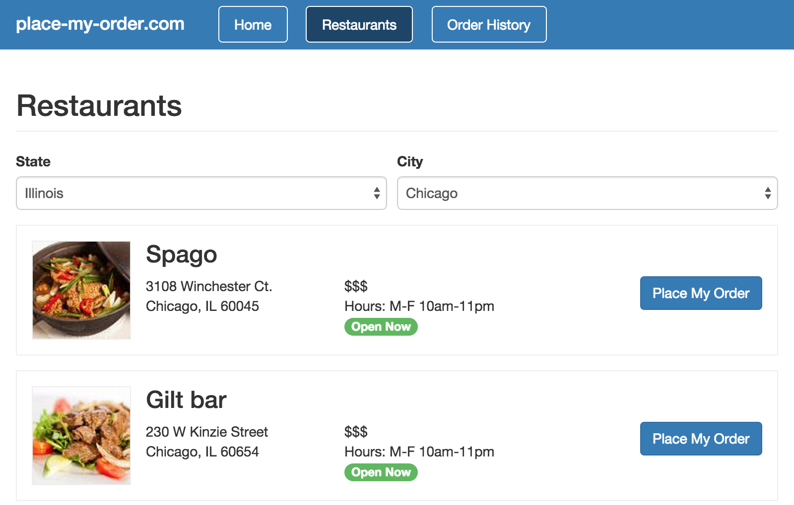

Loading data from a remote server never happens immediately, so it’s a best
practice to show some sort of indicator to improve the user’s experience.
CanJS makes this easy with observable promises.
Now that we have the cities and states loading from our fixtures, let’s get
a list of restaurants when a city is selected. Let’s start by modifying
the components/restaurant_list/restaurant_list.js file. Find this line:
// Restaurant code will go here
and replace it with these lines:
restaurants: {
get: function(){
var city = this.attr('city'),
state = this.attr('state');
return state && city ?
Restaurant.findAll({
'address.state': state,
'address.city': city
}) : null;
}
}
Here, we’re adding a new restaurants property that is a promise returned
by can.Model.findAll() (if a city and state are selected). This promise
has a few properties:
isPending: indicates that the promise hasn’t been resolved or rejected
isResolved: indicates that the promise has been resolved
value: the value of the resolved promise
Now let’s make use of this new property and it’s attributes in our
components/restaurant_list/restaurant_list.stache template. Find this line:
You’ll notice the {{#if restaurants.isPending}} and
{{#if restaurants.isResolved}} lines; the first is for showing a loading
indicator while the restaurants are being loaded, and the second is for
showing the list of restaurants once they’ve been fetched from the server
(or in our case, from the fixtures). After they have,
{{#each restaurants.value}} iterates over the list of restaurants to show
them on the page.
Speaking of fixtures, let’s modify our models/fixtures.js file. Add the
following lines:
The first line will let us make a GET request to /api/restaurants to
fetch the list of restaurants. The second line will return data for
a specific restaurant. Normally, this would be dynamic, depending on which
restaurant we want info for. For simplicity, however, we’re
responding with the same fixture data regardless of which restaurant is
requested.
Go ahead and refresh the Restaurants page in your browser. Now, we can
select a state, a city, and then immediately see a list of restaurants!
In this Chapter
Get the code for: chapter: loading states
Loading data from a remote server never happens immediately, so it’s a best practice to show some sort of indicator to improve the user’s experience. CanJS makes this easy with observable promises.
Now that we have the cities and states loading from our fixtures, let’s get a list of restaurants when a city is selected. Let’s start by modifying the
components/restaurant_list/restaurant_list.jsfile. Find this line:and replace it with these lines:
Here, we’re adding a new
restaurantsproperty that is a promise returned bycan.Model.findAll()(if a city and state are selected). This promise has a few properties:isPending: indicates that the promise hasn’t been resolved or rejectedisResolved: indicates that the promise has been resolvedvalue: the value of the resolved promiseNow let’s make use of this new property and it’s attributes in our
components/restaurant_list/restaurant_list.stachetemplate. Find this line:and replace it with these lines:
You’ll notice the
{{#if restaurants.isPending}}and{{#if restaurants.isResolved}}lines; the first is for showing a loading indicator while the restaurants are being loaded, and the second is for showing the list of restaurants once they’ve been fetched from the server (or in our case, from the fixtures). After they have,{{#each restaurants.value}}iterates over the list of restaurants to show them on the page.Speaking of fixtures, let’s modify our
models/fixtures.jsfile. Add the following lines:The first line will let us make a
GETrequest to/api/restaurantsto fetch the list of restaurants. The second line will return data for a specific restaurant. Normally, this would be dynamic, depending on which restaurant we want info for. For simplicity, however, we’re responding with the same fixture data regardless of which restaurant is requested.Go ahead and refresh the Restaurants page in your browser. Now, we can select a state, a city, and then immediately see a list of restaurants!

‹ Data Models and Fixtures Event Handling ›